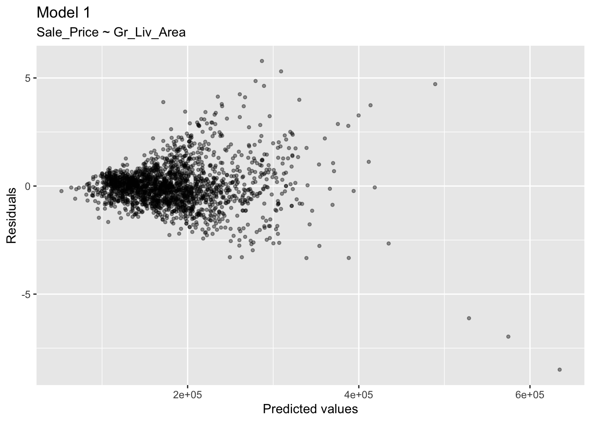

# Install and load package
# install.packages("AmesHousing")
library(AmesHousing)
# Load data
ames <- make_ames()Multiple Linear Regression
Overview of Multiple Linear Regression
Multiple linear regression is a statistical method used to model the relationship between two variables. As such, multiple regression extends the simple linear regression framework to include more than one predictor variable:
- more than one feature (also called the predictors or independent variables),
- one target (also called the outcome or dependent variable).
Multiple linear regression allows us to model the relationship between a single outcome variable \(Y_i\) and multiple predictors \(X_{1i}, X_{2i}, \dots, X_{pi}\) for each observation \(i = 1, \dots, n\).
Example Data
Again let’s use the Ames dataset to illustrate multiple linear regression. We will look to predict the sale price of a home (Sale_Price) using two predictors: above ground living area (Gr_Liv_Area) and the year the house was built (Year_Built).
The Model
The general form of the multiple linear regression model is:
\[ Y_i = \beta_0 + \beta_1 X_{1i} + \beta_2 X_{2i} + \dots + \beta_p X_{pi} + \varepsilon_i \]
where:
- \(Y_i\): the dependent (outcome) variable for observation \(i\).
- \(X_{ji}\): the value of predictor \(j\) for observation \(i\).
- \(\beta_0\): the intercept (expected value of \(Y_i\) when all \(X_{ji} = 0\)).
- \(\beta_j\): the regression coefficient for predictor \(X_{ji}\), representing the expected change in \(Y_i\) for a one-unit increase in \(X_{ji}\), holding all other predictors constant.
- \(\varepsilon_i\): the error term for observation \(i\), capturing variation in \(Y_i\) not explained by the predictors.
Estimating the Model
The coefficients \(\beta_0, \beta_1, \dots, \beta_p\) are estimated using ordinary least squares (OLS).
OLS chooses coefficient values that minimize the residual sum of square:
\[ \text{RSS} = \sum_{i=1}^n (y_i - \hat{y}_i)^2 \]
where:
- \(y_i\) is the observed outcome for observation \(i\),
- \(\hat{y}_i\) is the predicted value of \(Y_i\) from the model.
Interpreting Coefficients
- Each \(\beta_j\) reflects the unique contribution of predictor \(X_{ji}\) to explaining \(Y_i\), after adjusting for all other predictors.
- For example, \(\beta_2\) represents the expected change in \(Y_i\) when \(X_{2i}\) increases by one unit, holding \(X_{1i}, X_{3i}, \dots, X_{pi}\) constant.
Implementation in R
In R, we fit a multiple regression model with the lm() function:
fit_mlr <- lm(
Sale_Price ~ Gr_Liv_Area + Year_Built,
data = ames
)
summary(fit_mlr)
Call:
lm(formula = Sale_Price ~ Gr_Liv_Area + Year_Built, data = ames)
Residuals:
Min 1Q Median 3Q Max
-458172 -26758 -2236 18514 306986
Coefficients:
Estimate Std. Error t value Pr(>|t|)
(Intercept) -2.106e+06 5.734e+04 -36.74 <2e-16 ***
Gr_Liv_Area 9.597e+01 1.758e+00 54.60 <2e-16 ***
Year_Built 1.087e+03 2.938e+01 37.01 <2e-16 ***
---
Signif. codes: 0 '***' 0.001 '**' 0.01 '*' 0.05 '.' 0.1 ' ' 1
Residual standard error: 46660 on 2927 degrees of freedom
Multiple R-squared: 0.6591, Adjusted R-squared: 0.6588
F-statistic: 2829 on 2 and 2927 DF, p-value: < 2.2e-16We interpret the intercept, \(\beta_0=-2,106,000\), as the estimated mean sale price when both Gr_Liv_Area and Year_Built are 0. While this interpretation may not be meaningful in a real-world context (since a house with 0 living area and built in year 0 is not realistic), it serves as a baseline for our model.
We interpret the slope coefficient for Gr_Liv_Area, \(\beta_1=96\), as the estimated change in mean sale price for each additional square foot of living area, holding Year_Built constant. Specifically, for each one-square-foot increase in Gr_Liv_Area, the mean sale price is estimated to increase by \(96\) dollars, holding Year_Built constant.
We interpret the slope coefficient for Year_Built, \(\beta_2=1,087\), as the estimated change in mean sale price for each additional year the house was built, holding Gr_Liv_Area constant. Specifically, for each one-year increase in Year_Built, the mean sale price is estimated to increase by roughly a thousand dollars, holding Gr_Liv_Area constant.
Interactions in Multiple Linear Regression
In multiple linear regression, an interaction occurs when the effect of one predictor on the response variable depends on the level of another predictor.
In other words, the impact of one variable is modified or moderated by another variable.
For two predictors, \(X_1\) and \(X_2\), an interaction term can be included as:
\[ Y_i = \beta_0 + \beta_1 X_{1i} + \beta_2 X_{2i} + \beta_3 (X_{1i} \cdot X_{2i}) + \varepsilon_i \]
where:
- \(\beta_3\) captures the interaction effect between \(X_1\) and \(X_2\).
- The term \((X_{1i} \cdot X_{2i})\) is the product of the two predictors.
- If \(\beta_3 \neq 0\), the effect of \(X_1\) on \(Y\) changes depending on \(X_2\), and vice versa.
Interactions allow the model to represent non-additive relationships between predictors and the response. Without interactions, the model assumes each predictor contributes independently, which may oversimplify reality.
fit_interaction <- lm(
Sale_Price ~ Gr_Liv_Area + Year_Built + Gr_Liv_Area:Year_Built,
data = ames
)
summary(fit_interaction)
Call:
lm(formula = Sale_Price ~ Gr_Liv_Area + Year_Built + Gr_Liv_Area:Year_Built,
data = ames)
Residuals:
Min 1Q Median 3Q Max
-541888 -25275 -1849 17227 292527
Coefficients:
Estimate Std. Error t value Pr(>|t|)
(Intercept) -3.252e+05 1.757e+05 -1.851 0.0643 .
Gr_Liv_Area -1.033e+03 1.055e+02 -9.792 <2e-16 ***
Year_Built 1.825e+02 8.931e+01 2.043 0.0411 *
Gr_Liv_Area:Year_Built 5.727e-01 5.351e-02 10.703 <2e-16 ***
---
Signif. codes: 0 '***' 0.001 '**' 0.01 '*' 0.05 '.' 0.1 ' ' 1
Residual standard error: 45780 on 2926 degrees of freedom
Multiple R-squared: 0.6719, Adjusted R-squared: 0.6716
F-statistic: 1998 on 3 and 2926 DF, p-value: < 2.2e-16We could interpret the interaction coefficient, \(\beta_3=0.057\), as follows: For each additional square foot of living area, the effect of Year_Built on Sale_Price increases by about six cents, holding Gr_Liv_Area constant. Conversely, for each additional year the house was built, the effect of Gr_Liv_Area on Sale_Price increases by about six cents, holding Year_Built constant.
Assessing Model Accuracy
To assess how accurate our models are we will go back to our cross-validation framework. First, let’s split our data into test and train sets.
set.seed(123)
split <- initial_split(
ames,
prop = 0.7,
strata = "Sale_Price"
)
ames_train <- training(split)
ames_test <- testing(split)Now, let’s consider three different models we may want to compare: 1. Model 1: A simple linear regression using only Gr_Liv_Area as a predictor.
2. Model 2: A multiple linear regression using Gr_Liv_Area and Year_Built as predictors.
3. Model 3: A full model using all available predictors.
Model 1
library(caret)
# Train model using 10-fold cross-validation
set.seed(123) # for reproducibility
(cv_model1 <- train(
form = Sale_Price ~ Gr_Liv_Area,
data = ames_train,
method = "lm",
trControl = trainControl(method = "cv", number = 10)
))Linear Regression
2049 samples
1 predictor
No pre-processing
Resampling: Cross-Validated (10 fold)
Summary of sample sizes: 1843, 1844, 1844, 1844, 1844, 1844, ...
Resampling results:
RMSE Rsquared MAE
56644.76 0.510273 38851.99
Tuning parameter 'intercept' was held constant at a value of TRUEThe resulting cross-validated RMSE is $56,644.76 (this is the average RMSE across the 10 CV folds). How should we interpret this? When applied to unseen data, the predictions this model makes are, on average, about $56,644.76 off from the actual sale price.
Model 2
# model 2 CV
set.seed(123)
(cv_model2 <- train(
Sale_Price ~ Gr_Liv_Area + Year_Built,
data = ames_train,
method = "lm",
trControl = trainControl(method = "cv", number = 10)
))Linear Regression
2049 samples
2 predictor
No pre-processing
Resampling: Cross-Validated (10 fold)
Summary of sample sizes: 1843, 1844, 1844, 1844, 1844, 1844, ...
Resampling results:
RMSE Rsquared MAE
46865.68 0.6631008 31695.48
Tuning parameter 'intercept' was held constant at a value of TRUEThe resulting cross-validated RMSE is now a bit lower at $46,865.68 (this is the average RMSE across the 10 CV folds). How should we interpret this? When applied to unseen data, the predictions this model makes are, on average, about $46,865.68 off from the actual sale price.
Model 3
# model 3 CV
set.seed(123)
(cv_model3 <- train(
Sale_Price ~ Gr_Liv_Area + Year_Built + Gr_Liv_Area*Year_Built,
data = ames_train,
method = "lm",
trControl = trainControl(method = "cv", number = 10)
))Linear Regression
2049 samples
2 predictor
No pre-processing
Resampling: Cross-Validated (10 fold)
Summary of sample sizes: 1843, 1844, 1844, 1844, 1844, 1844, ...
Resampling results:
RMSE Rsquared MAE
46523.38 0.6691386 30746.99
Tuning parameter 'intercept' was held constant at a value of TRUEAgain we see a (very) small improvement when adding all the available features. The resulting cross-validated RMSE is now lower at $46,523.38 (this is the average RMSE across the 10 CV folds). How should we interpret this? When applied to unseen data, the predictions this model makes are, on average, about $46,523.38 off from the actual sale price.
# Extract out of sample performance measures
summary(resamples(list(
model1 = cv_model1,
model2 = cv_model2,
model3 = cv_model3
)))
Call:
summary.resamples(object = resamples(list(model1 = cv_model1, model2
= cv_model2, model3 = cv_model3)))
Models: model1, model2, model3
Number of resamples: 10
MAE
Min. 1st Qu. Median Mean 3rd Qu. Max. NA's
model1 34076.73 37656.23 39785.18 38851.99 40200.92 42058.68 0
model2 29227.14 30885.17 32003.59 31695.48 32710.41 33942.26 0
model3 27811.34 30036.68 31084.19 30746.99 31639.78 33142.02 0
RMSE
Min. 1st Qu. Median Mean 3rd Qu. Max. NA's
model1 45604.65 55896.58 57000.74 56644.76 59544.08 66198.59 0
model2 37174.26 42650.00 46869.84 46865.68 51155.14 55780.47 0
model3 35825.06 41986.84 46598.42 46523.38 50897.45 58150.97 0
Rsquared
Min. 1st Qu. Median Mean 3rd Qu. Max. NA's
model1 0.4230788 0.4621034 0.5090642 0.5102730 0.5681246 0.5996400 0
model2 0.5829425 0.6075293 0.6865871 0.6631008 0.6976664 0.7254572 0
model3 0.5653745 0.6087785 0.6898757 0.6691386 0.7134740 0.7453157 0Model Concerns
As discussed earlier, linear regression remains one of the most widely used modeling techniques, primarily because the regression coefficients are straightforward to interpret. Each coefficient quantifies the expected change in the response variable for a one-unit change in a predictor, holding all other predictors constant.
However, linear regression relies on several strong assumptions, and these assumptions are often violated as we increase the number of predictors in the model. Violations can lead to biased estimates, misleading interpretations of coefficients, and inaccurate predictions.
Linearity
Linear regression assumes a linear relationship between each predictor and the response variable. This means that the change in the response associated with a one-unit change in a predictor is constant across all levels of that predictor.
In practice, many relationships are non-linear. Fortunately, we can often address this issue by applying transformations to the response and/or predictors to make the relationship approximately linear.
For example, the relationship between home sale price and the year the home was built is shown:
p1 <- ggplot(ames_train, aes(Year_Built, Sale_Price)) +
geom_point(size = 1, alpha = .4) +
geom_smooth(se = FALSE) +
scale_y_continuous("Sale price", labels = scales::dollar) +
xlab("Year built") +
ggtitle(paste("Non-transformed variables with a\n",
"non-linear relationship."))
p2 <- ggplot(ames_train, aes(Year_Built, Sale_Price)) +
geom_point(size = 1, alpha = .4) +
geom_smooth(method = "lm", se = FALSE) +
scale_y_log10("Sale price", labels = scales::dollar,
breaks = seq(0, 400000, by = 100000)) +
xlab("Year built") +
ggtitle(paste("Transforming variables can provide a\n",
"near-linear relationship."))
gridExtra::grid.arrange(p1, p2, nrow = 1)- The left plot shows the raw data, revealing a non-linear pattern where the change in sale price is not constant across years.
- By applying a log transformation to the sale price, we can achieve a relationship that is closer to linear, making it more suitable for linear regression.
Heteroskedasticity
Heteroskedasticity occurs when the variance of the errors is not constant across all levels of the predictors. This violates the homoscedasticity assumption of linear regression.
Looking at the plot of residuals versus fitted values for Model 1, we can see a funnel shape, indicating that the variance of the residuals increases with the fitted values. This suggests heteroskedasticity, which can lead to inefficient estimates and invalid inference.
df1 <- broom::augment(cv_model1$finalModel, data = ames_train)
ggplot(df1, aes(.fitted, .std.resid)) +
geom_point(size = 1, alpha = .4) +
xlab("Predicted values") +
ylab("Residuals") +
ggtitle("Model 1", subtitle = "Sale_Price ~ Gr_Liv_Area")
To address heteroskedasticity, we can consider transforming the response variable (e.g., using a log transformation) or using robust standard errors that adjust for non-constant variance.
Autocorrelation
We might also be concerned with checking the residuals for autocorrelation, especially if our data has a time component. Autocorrelation occurs when the residuals are correlated with each other, violating the independence assumption. This can lead to underestimated standard errors and overly optimistic p-values. Since our current data does not have a time component, we will not explore this further here.
Feature Importance
The vip() function from the vip package in R (Variable Importance Plots) is commonly used to visualize the relative importance of predictors in a model.
# Load package
library(vip)The vip() function takes any fitted model object, such as lm() for linear regression, glm(), random forests, or xgboost.
For linear regression models, vip() typically uses the absolute value of the t-statistics of the coefficients as a measure of importance. Predictors with larger absolute t-values are considered more influential on the response.
# model 4 CV
set.seed(1234)
(cv_model4 <- train(
Sale_Price ~ Neighborhood + Gr_Liv_Area + Year_Built + Overall_Qual + Total_Bsmt_SF + Garage_Area + Full_Bath + TotRms_AbvGrd + Fireplaces + Garage_Cars + Wood_Deck_SF + Open_Porch_SF + Year_Remod_Add ,
data = ames_train,
method = "lm",
trControl = trainControl(method = "cv", number = 10)
))Linear Regression
2049 samples
13 predictor
No pre-processing
Resampling: Cross-Validated (10 fold)
Summary of sample sizes: 1844, 1845, 1843, 1844, 1844, 1844, ...
Resampling results:
RMSE Rsquared MAE
32145.44 0.8392331 19868.31
Tuning parameter 'intercept' was held constant at a value of TRUEvip(cv_model4, num_features = 10, method = "model")